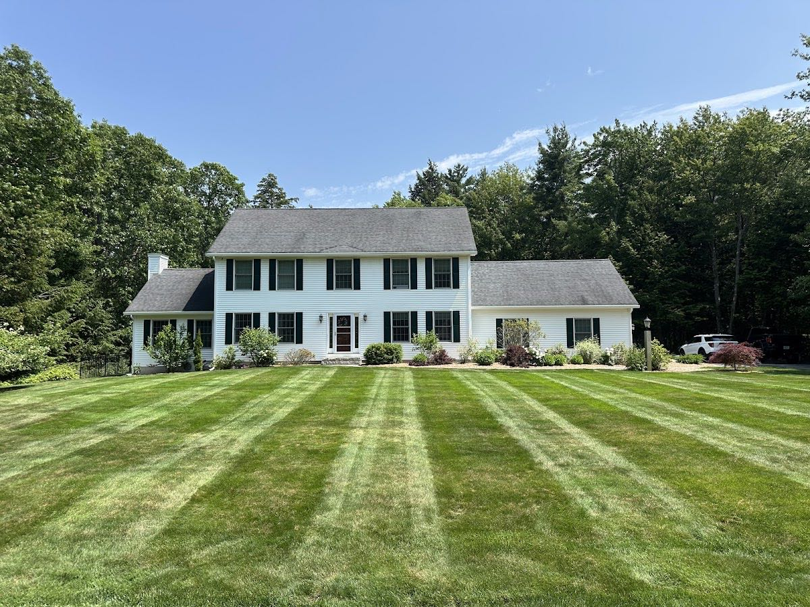
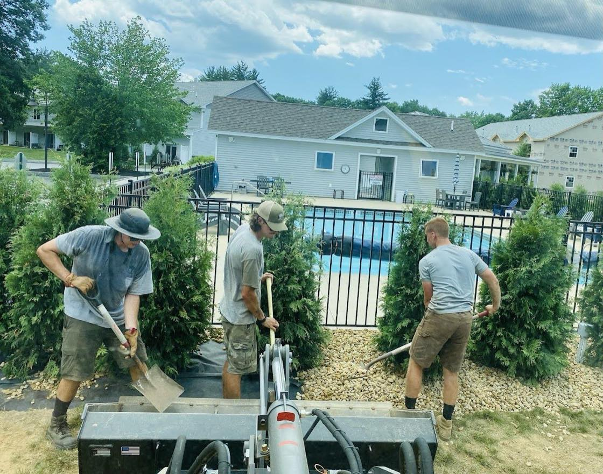
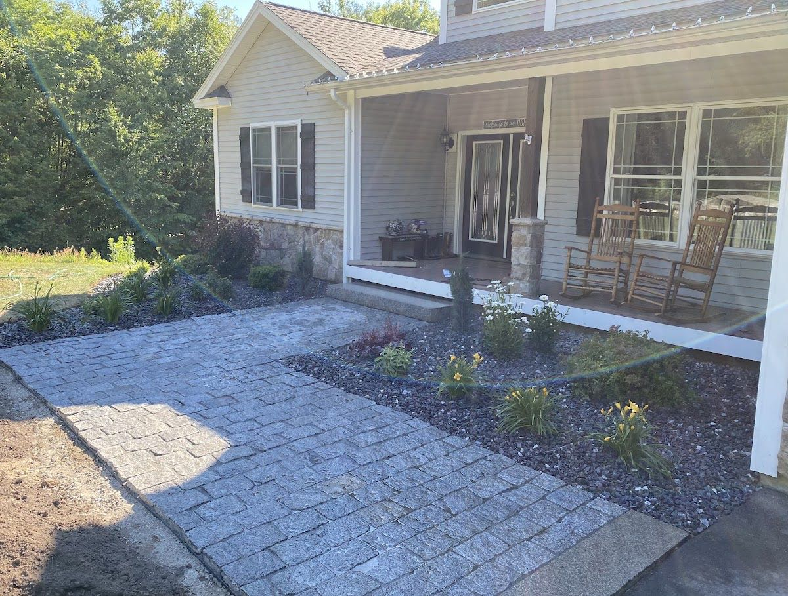
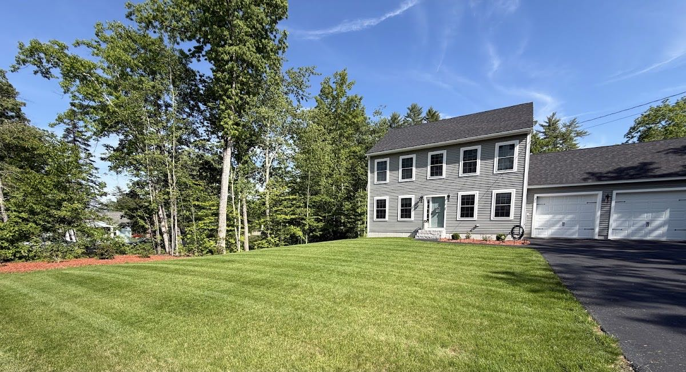
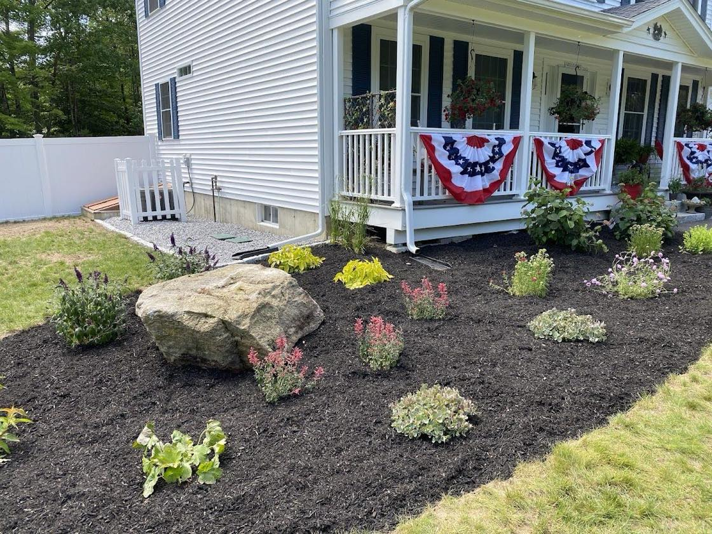
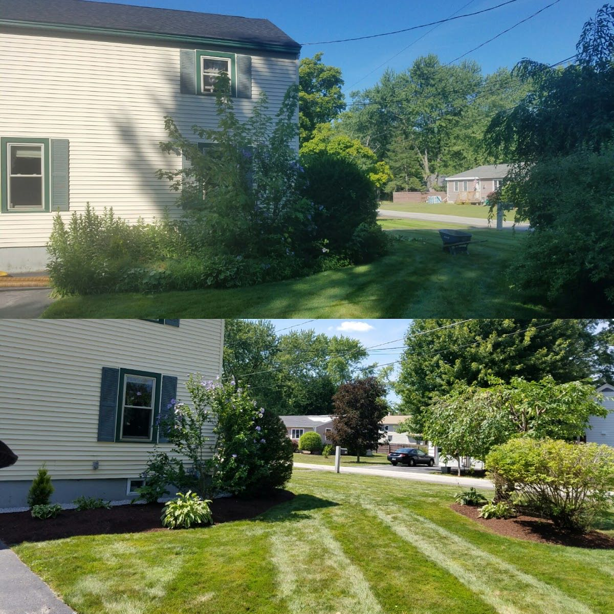

01 / Property & lawn care
Lawn maintenance, planting beds, paver walkways and seasonal care for homes across Boscawen and the surrounding area — rated 5.0 on Google.

Mowing, edging and clean stripes that keep a property looking kept all season.
Designed beds, shrubs and fresh mulch that frame the house.
Stone walkways and entries laid level and clean.
New lawns, regrading and seasonal cleanups, prepped and finished right.

From a single bed to a full property, the crew handles the planting, grading and finish work in-house — the reason the Google rating sits at a clean 5.0 across 36 reviews.




| Phone | (603) 783-1783 |
| Address | 161A King St, Boscawen, NH 03303 |
| Mon–Fri | 7:00 AM – 6:00 PM |
| Sat / Sun | Closed |
| Rating | 5.0 · 36 Google reviews |